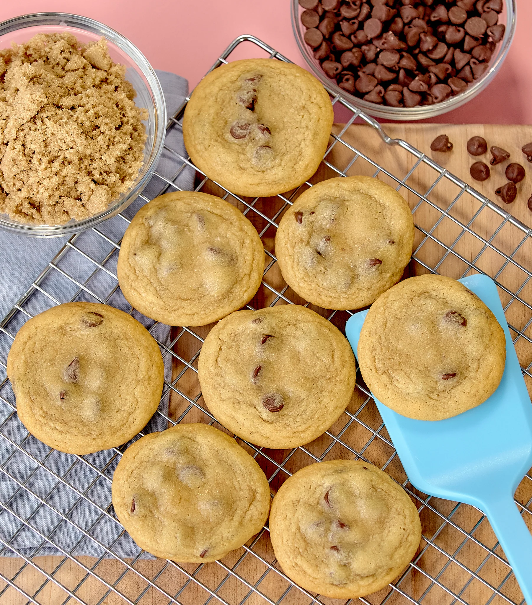

Chocolate Chip Cookies
Yield: 3 dozen (Source)

Things you'll need:
Ingredients:
- 2 1/2 cups all-purpose flour
- 3/4 cup granulated sugar
- 3/4 cup light brown sugar
- 2 tsp baking soda
- 1 tsp salt
- 1 tsp vanilla extract
- 12 ounces semisweet chocolate chips
- 2 sticks salted butter (Room Temp)
- 2 large eggs
Equipment:
- Hand Mixer
- Non-stick baking sheet
Procedure:
- Preheat the oven to 375F (190.6C) degrees
- In a medium bowl, whisk together the flour, baking soda and salt
- In a large bowl, cream together the butter, sugar and vanilla extract until light and fluffy
- Add the eggs one at a time mixing well in between each addition
- On low speed, slowly add the dry ingredients into the wet ingredients
- Fold in the chocolate chips
- Place 2 tbsp of dough onto the baking sheet 2 inches apart
- Bake in the oven for 7-9 minutes
- Let it sit on the tray for 1 minute to cool
- Transfer it to a wire rack to cool completely
Main Page